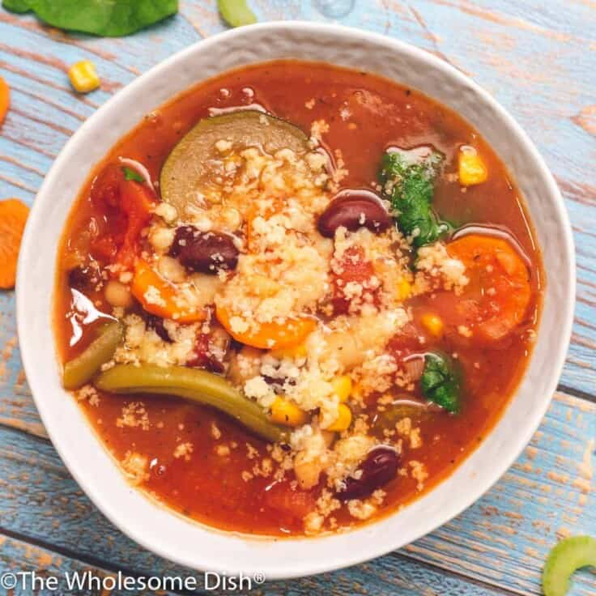
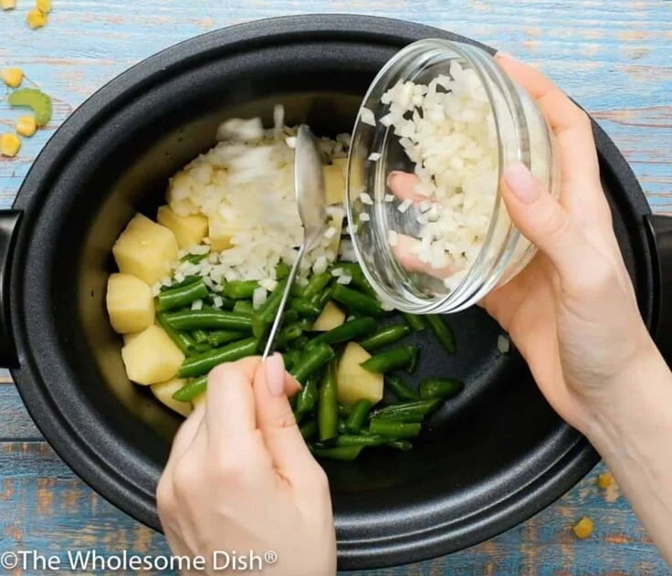
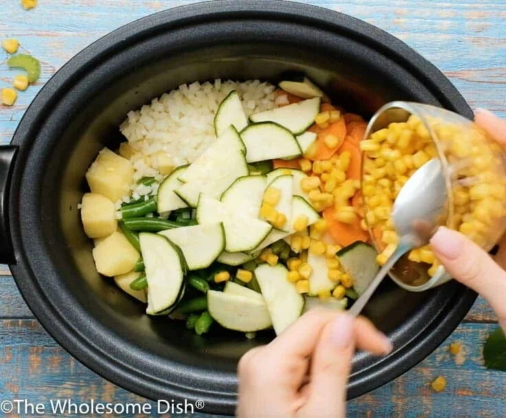
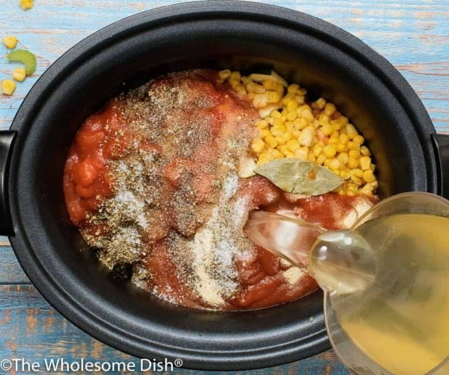
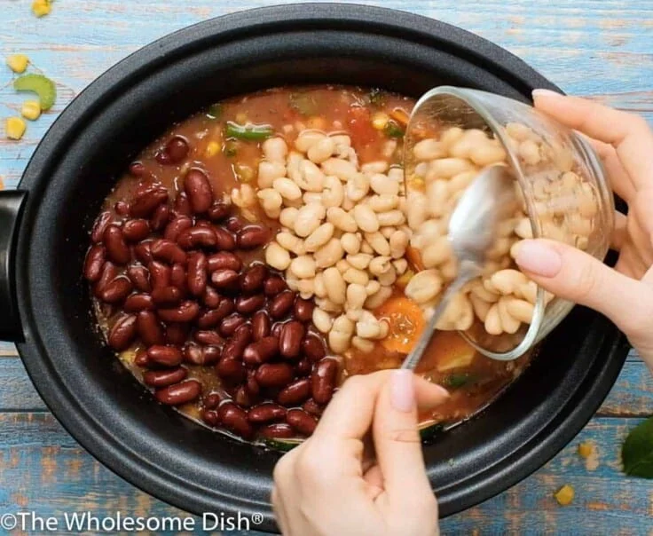
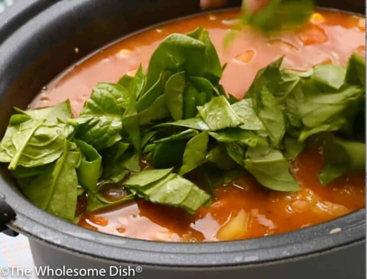
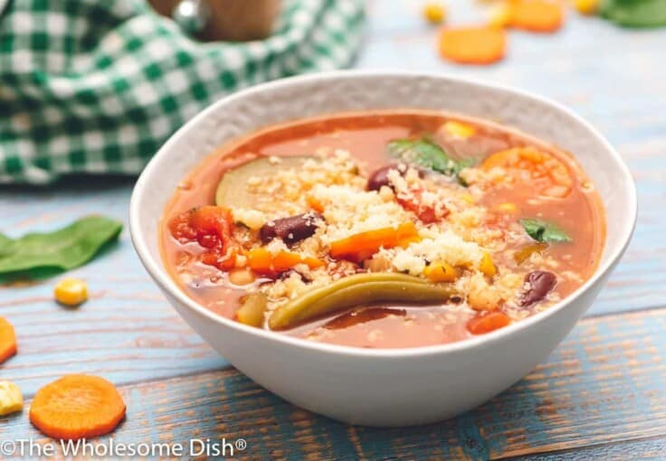

Minestrone Soup

Description
Crock Pot Minestrone is the perfect healthy soup. It’s loaded
with tons of vegetables and full of great flavor.
Ingredients
- 2 cups russet potato peeled and chopped into 1 inch
cubes
- 1 cup sliced carrots
- 1 cup sliced celery
- 1 cup chopped yellow onion
- 1 cup sliced zucchini
- 1 cup frozen cut green beans
- 1 cup frozen corn kernels
- 4 cups vegetable broth
- 1 (15 oz.) can petite diced tomatoes
- 1 (15 oz.) can tomato sauce
- 1 tablespoon dried Italian seasoning
- 2 teaspoons granulated sugar
- 1 teaspoon salt
- 1 teaspoon garlic powder
- 1/4 teaspoon ground black pepper
- 2 dried bay leaves
- 1 (15 oz.) can white beans, drained and rinsed
(cannellini beans, navy beans, northern beans, etc.)
- 1 (15 oz.) can red kidney beans, drained and rinsed
- 2 cups loosely-packed roughly-chopped baby spinach
leaves
- For Serving: Grated Parmesan cheese
Steps
- Add peeled and cubed potatoes to a large slow cooker.
- Add chopped onion and frozen cut green beans.
You could use fresh green beans, but there are a lot of
vegetables to chop for this recipe so I like this short
cut.

- Add sliced celery, carrots, and zucchini.
- Add frozen corn kernels.

- Add tomato sauce, broth, and petite diced tomatoes.
- Add Italian seasoning, sugar, salt, pepper, garlic powder,
and bay leaves.

- Add drained and rinsed red kidney beans and white
beans.
- Cover and cook on low for 8 hours, or high for 4
hours.

- Add chopped baby spinach leaves.
- Cook another 15 minutes.
- Serve topped with grated parmesan cheese.

